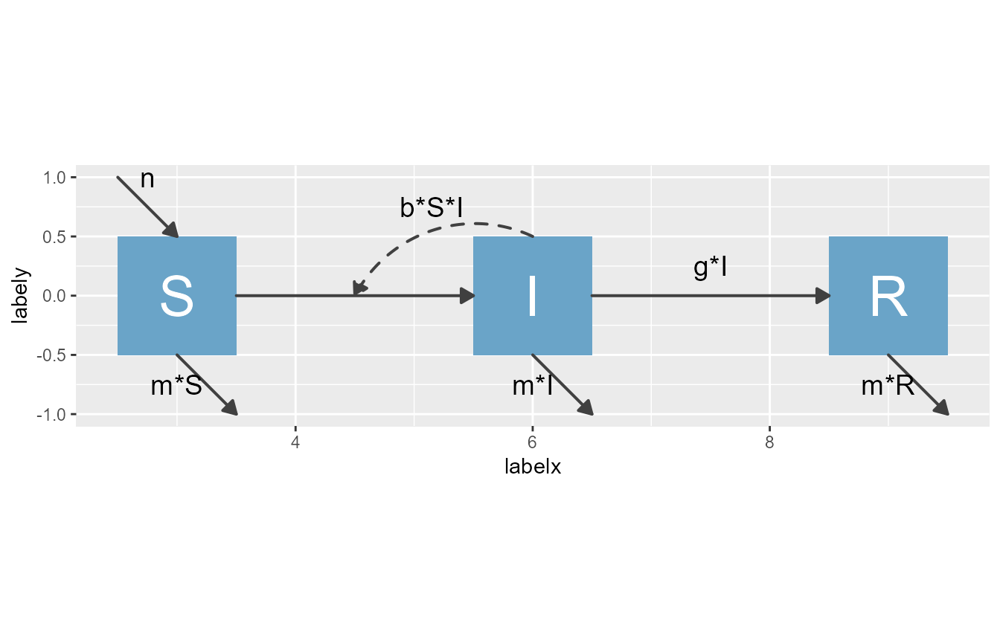
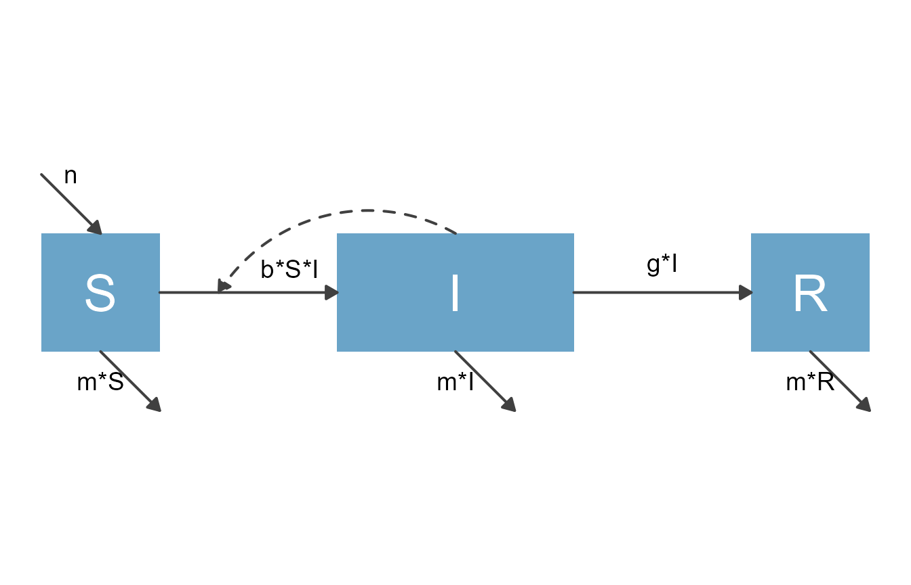
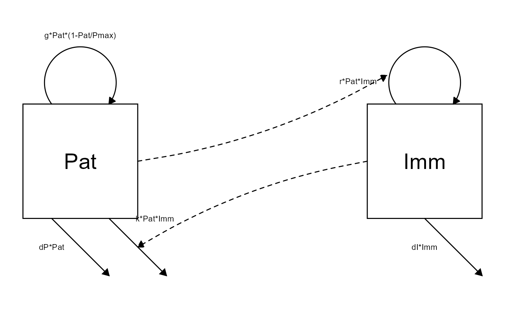

vignettes/C_modify_input_structure.Rmd
C_modify_input_structure.RmdWe assume you went through the getting started vignette and also the basic modification vignette.
If the basic modifications you can achieve by providing different options to make_diagram, then you do not need to go any further, and there is no need to understand in more detail how flowdiagramr works. However, it is quite likely that at some point, you want to further tweak your diagram. To do so successfully, it is useful to learn some more details about how the package works.
As you learned, producing a diagram with flowdiagramr involves two steps. After you have defined your model, there is a first step that takes your model and creates a list of data frames (which we called the input_structure in the prior vignettes). These data frames are used by make_diagram to produce the ggplot code and figure.
The advantage of this 2-step process is that you can make modifications to the input_structure object before sending it into the make_diagram function, and thus modify the layout of the diagram beyond what you can through themake_diagram options, while still being fairly easy to do.
make_diagram input objectTo modify the object returned from prepare_diagram and used as input for make_diagram, it is important to learn a bit about it. You can learn the details from the help file for the prepare_diagram function, which you can call like this
help('prepare_diagram')THIS SHOULD GO INTO HELP FILE. THEN DELETE FROM HERE, SO WE ONLY HAVE IN ONE PLACE.
Five (5) data frames are produced based on the model structure:
EXPLAIN WHICH NEED TO BE PRESENT AND WHICH CAN BE MISSING/EMPTY
nodes: a data frame with four columns - ALSO ROW?
id: the node (variable) id number, used to match with the edge data frameslabel: the label of the node (variable), e.g. “S” for susceptiblex: the x position of the node box CENTER OR CORNER?y: the y position of the node boxhorizontal_edges: a data frame with 9 columns
to: the id of the node to which the flow terminates (e.g., arrow points toward this node)from: the id of the node from which the flow origins (e.g., arrow points away this node)label: the label of the flow to appear next to the line segment, typically an equationxstart: the starting x position of the line segmentystart: the starting y position of the line segmentxend: the ending x position of the line segmentyend: the ending y position of the line segmentxmid: the x midpoint of the line segment, for intersections with other segments due to interactionsymid: the y midpoint of the line segment, for intersections with other segments due to interactionsvertical_edges: a data frame with 9 columns (same as horizontal_edges)curved_edges: a data frame with 9 columns (same as horizontal_edges)feedback_edges: a data frame with 9 columns (same as horizontal_edges)The package attempts to make intelligent choices on which flows belong in which data frame. For example, flows into or out of the system with only one node intersection are typically vertical. And flows that bypass a node are typically curved. The data frames above are returned as a list. In some cases, many of the data frames will be empty.
make_diagram input objectOnce you understand the components of the input object and what the different parts mean, you can modify them. This allows you to impact the look of the diagram you get once you send your modified object into the make_diagram function.
We’ll show a few examples next.
Let’s revisit the SIR model from the basic modification vignette. First we set up the model.
#Set up model
varlabels = c("S","I","R")
varnames = c("Susceptible","Infected","Recovered")
# currently only works with trailing + signs
flows = list(S_flows = c("+n", "-b*S*I", "-m*S"),
I_flows = c("+b*S*I","-g*I", "-m*I"),
R_flows = c("+g*I", "-m*R"))
sirmodel = list(varlabels = varlabels, varnames = varnames, flows = flows)Next, we send the model to the prepare_diagram function.
sir_diagram_list <- prepare_diagram(sirmodel)If we send this input structure to make_diagram, we get the following plot
plot1 <- make_diagram(sir_diagram_list)
plot(plot1)
Next, instead of sending this structure to the make_diagram function right away, we’ll take a look at it and modify it. Here are the details contained in this object
print(sir_diagram_list)
#> $nodes
#> id label row x y xmin xmax ymin ymax
#> 1 1 S 1 6 -2 5.5 6.5 -2.5 -1.5
#> 2 2 I 1 9 -2 8.5 9.5 -2.5 -1.5
#> 3 3 R 1 12 -2 11.5 12.5 -2.5 -1.5
#>
#> $horizontal_edges
#> to from label interaction xstart ystart xend yend xmid ymid
#> 2 2 1 FALSE 6.5 -2 8.5 -2 7.5 -1.75
#> 3 3 2 g*I FALSE 9.5 -2 11.5 -2 10.5 -1.75
#>
#> $vertical_edges
#> to from label xstart ystart xend yend xmid ymid
#> 1 1 NA n 5.5 -1.0 6.0 -1.5 5.75 -1.00
#> 5 NA 1 m*S 6.0 -2.5 6.5 -3.0 6.00 -2.75
#> 6 NA 2 m*I 9.0 -2.5 9.5 -3.0 9.00 -2.75
#> 7 NA 3 m*R 12.0 -2.5 12.5 -3.0 12.00 -2.75
#>
#> $curved_edges
#> to from label interaction xstart ystart xend yend curvature row labelx labely
#> 1 NA 2 b*S*I TRUE 9 -1.5 7.5 -2 0.4 1 8.15 -1.25
#>
#> $feedback_edges
#> [1] to from label xstart ystart xend yend xmid ymid
#> <0 rows> (or 0-length row.names)Let’s modify this object somewhat. The following code moves one of the arrows and …
diagram_list_modified <- sir_diagram_list
diagram_list_modified$curved_edges$xend[1] = 5.5
diagram_list_modified$nodes$x[3] = 13 With those modifications, the resulting diagram looks like this
plot2 <- make_diagram(diagram_list_modified)
plot(plot2)
Here is another example, the predator prey model you saw in earlier vignettes.
Setting up the model:
varlabels = c("Pat","Imm")
flows = list(Pat_flows = c("g*Pat*(1-Pat/pmax)", "-dP*Pat", "-k*Pat*Imm"),
Imm_flows = c("r*Pat*Imm", "-dI*Imm"))
mymodel = list(varlabels = varlabels, flows = flows)Preparing the diagram:
diagram_list <- prepare_diagram(mymodel)Let’s assume that you want the parameter that specifies the maximum pathogen level at which growth goes to zero to be called Pmax, not pmax. You can’t do that when you specify the model since flowdiagramr requires that parameters start with a lower case letter. Not a big deal, you can fix this now by replacing the label for that flow as such:
diagram_list$feedback_edges$label[1] <- "g*Pat*(1-Pat/Pmax)"Sure enough, if you plot this now, the parameter is labeled as you wanted, showing Pmax instead of pmax.
my_diagram <- make_diagram(diagram_list)
plot(my_diagram)